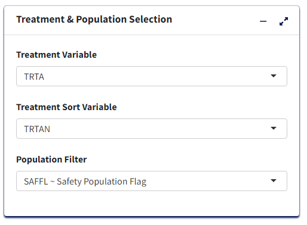
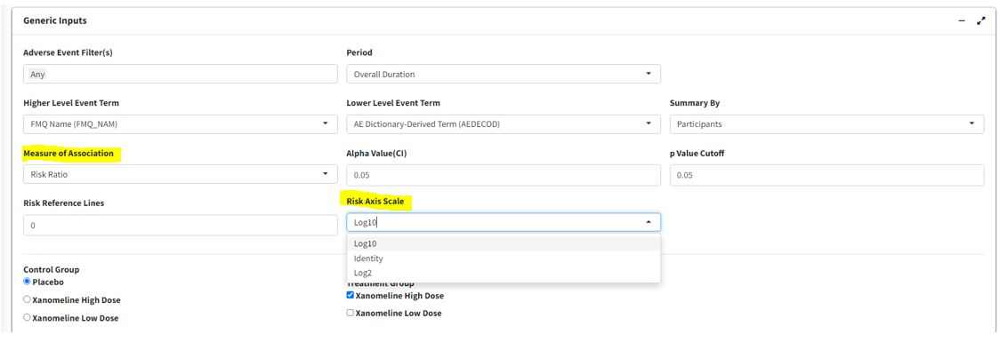
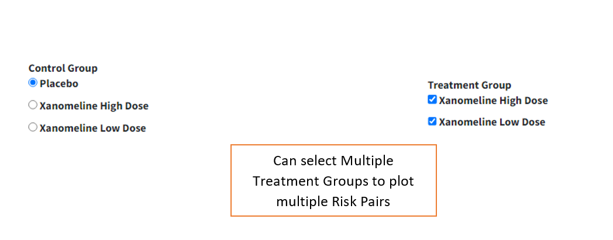

Introduction
This article pertains to creating Forest Plot of Adverse Events using
the carver application. The required input ADaM data for this is an
ADAE dataset.
Report Inputs in App
Upon loading ADAE data and clicking the Report Inputs
tab, select Report Type as Figure and Report Name as
Forest Plot

Treatment/Population
Required
- Under Treatment and Population Selection, select appropriate
Treatment Variable:
Treatment Variable determines grouping of points in the scatter plot section as well as treatment pairs in the risk forest section.
- Select appropriate
Treatment Sort Variablewhich will give the order for sorting Treatment variable
- To subset entire data based on available population flags, select
Population Filter. eg. Overall, Safety (SAFFL) etc

Data Pre-processing/Preparation
Optional - Can use defaults
-
Analysis Subset Conditionis the filter condition for the data to get counts of participants/events for each treatment.
-
Denominator Subset Conditionis the filter condition for the data to calculate percentages of participants/events for each treatment.
-
Adverse Event Filter(s), select which adverse events are to be filtered for analysis from the list available in the data.
-
Perioddrop-down to filter the required time period alone select ‘Overall Period’ to take entire data or ‘Other’ to specify the residual period (in days) to cut off.

-
Summary Byto select either ‘Patients’ or ‘Events’ which determines how counts are calculated. -
Lower Level Event Term- Variable which gives the list of adverse event terms to be analysed and displayed in the plot
-
Higher Level Event Term- Variable that is used for grouping Lower Level Term, its values will be reflected in the Hover information for each term.

Statistical Analysis
-
Measure of Association- which statistic to calculate, ‘Risk Difference’ or ‘Risk Ratio’
-
Alpha Value(CI)- Give the alpha value to determine Confidence Interval. eg. 0.05 –> 95% CI
-
p Value Cutoff- The p-value below which to consider the any difference in % as statistically significant.
-
Risk Reference Lines- X axis intercept value to draw a vertical reference line in pair-wise risk plot.
-
Risk Axis Scale- How to transform risk axis to be plotted - log or identity (values as is) scales

-
Control Group- Select treatment value within Treatment Variable to use as control for analysis
-
Treatment Group- Select treatment value(s) to perform pair-wise analysis against Control. Selecting multiple treatments will result in displaying multiple pairs, eg. Control-Treatment1 and Control-Treatment2 pairs in this case.

Graphical Display Options
-
Cutoff Incidence- Slide to the minimum % incidence a term should have (either in control or treatment group) to be displayed in the graph. Those with lower values will be removed.
-
p-value Transformation- Transform p-values displayed in graph for each term - None or log transform.
-
Sorting Option- Order in which to sort the Adverse Event terms in plot - Ascending, Descending (usingSorting Variable) or Alphabetical.
-
Sorting Variable- Which parameter/measure should be used to sort the terms in the plot in order ofSorting Option

Graph Output
For selected options, visualize Forest Plot in Graph Output tab. Note that the color legend identifies the risk pairs in forest graph as well as p-value columns. In the incidence scatterplot, certain points are also depicted with larger green and red points which denotes a statistically significant (per p value cutoff) lower or higher incidence % respectively, for the treatment group vs control.